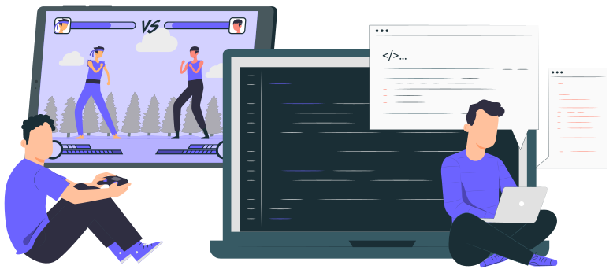
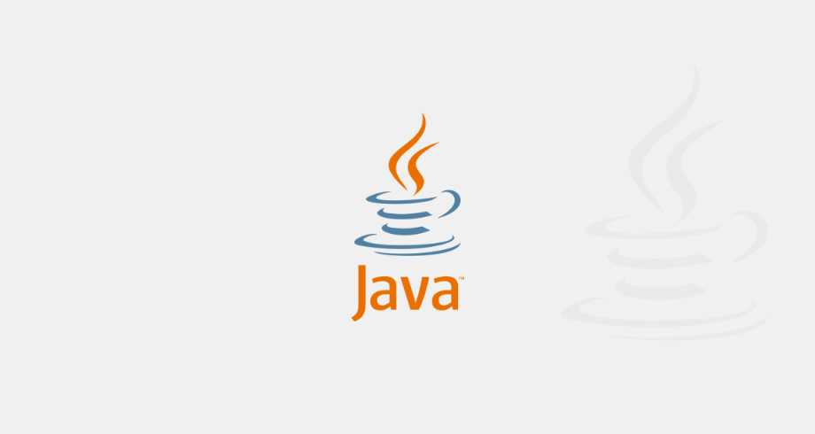

Setembro de 2019
Início da Jornada

Eu comecei na programação com intenção de programar e criar jogos por
conta de um
video do Gemaplys
que acabei vendo por acaso, no video ele mostrava alguns jogos que ele
fez quando ainda era criança, por algum motivo aquilo me deixou
fascinado e eu queria muito fazer algo parecido. Eu já tinha uma boa
afinidade com tecnologia mas não sabia com o que trabalhar então eu
finalmente tinha encontrando algo para concentrar meu foco e estudar.
Dezembro de 2019
Talvez não seja pra mim

Mesmo assim... eu não fazia ideia do que estudar, como estudar e
quando estudar cada area. Ao falar isso para um amigo ele me indicou
estudar com ele que estava recebendo ajuda de alguém que já estava
trabalhando na area de programação, mas havia um problema ele não
trabalhava com jogos e eu também não me recordo exatamente o que era.
Enfim, sem nem perceber eu estava estudando Java sem nem saber o que
estava aprendendo, nenhuma lógica de programação estudada e muitos
termos complicados. Como se é de imaginar alguém com 15 anos não
saberia lidar com isso, então eu acabei desistindo daquela ideia de
programar.
Janeiro 2023
OK, vamos de novo!
No início de 2023, já com 19 anos. Recomecei na programação, só que
dessa vez eu comecei lentamente e sem pular etapas(eu acho). Ainda amando a ideia de trabalhar com games, acabei
encontrando mais uma paixão: desenvolvimento de sites. Meu foco atual é
me tornar um desnevolvedor Front-End, ainda estou no começo dos
estudos sobre html e css, mas já tenho vontade de avançar para
JavaScript e logo trabalhar profissionalmente.
14 de Maio de 2023
Foco e Persistência
Esse site feito por mim foi graças ao evento da
Rocketseat, graças ao
Mayk
e ao
Rodrigo
guiando a trilha Explorer eu aprendi sobre grid-layout, flex-blox e
como centralizar uma div. Obrigado por todo o conhecimento passado
nessa semana que com certeza fez muita diferença na minha jornada💜